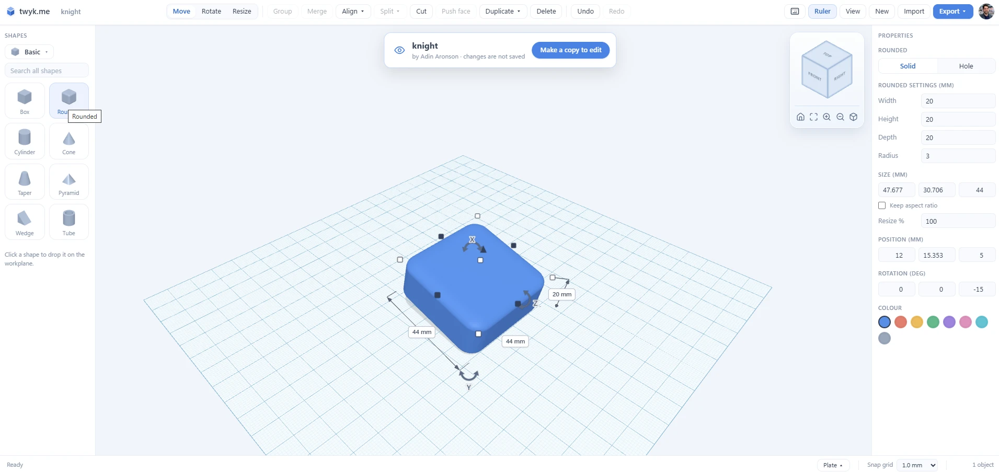
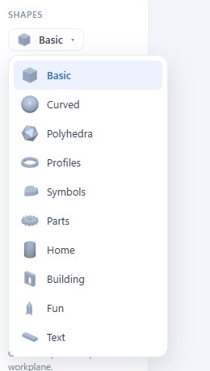
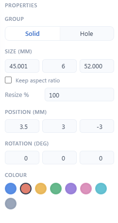
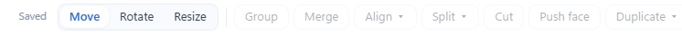
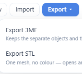

Describe what you want and let AI build the first version, or start from a blank workplane. Either way you finish in the same precise editor, right in your browser. Here is the whole workflow, start to finish.

Type what you want to make, or start from a photo of the thing you need. twyk generates a 3D model that opens straight in the editor, ready to change.
Tell the editor what to change, and it makes the exact edit for you:
Ask for 72 mm and you get 72.00 mm. You can always fine-tune by hand with the tools below.
Prefer to start from scratch, or want to add parts to a generated model? Click a shape to drop it on the workplane. The library goes far past the basics, organised into ten categories:
There is also a search box when you know what you're after.

Select any shape and the properties panel gives you exact control:
Parts fit the first time because you told them exactly how big to be.

Move, rotate and resize with direct handles, then shape the design with the tools that do the heavy lifting:
And the "Saved" badge on the left is doing exactly what it says: your work saves as you go.

When the design is done, export it in the format your workflow needs:
Or publish it to twyk.me instead: your model gets a live 3D page, a gallery, print files and a place on your creator profile — and anyone can open it back up and remix it, by hand or with AI, with credit linking back to you.

No install. Describe your first object, or open the editor and drop a shape.